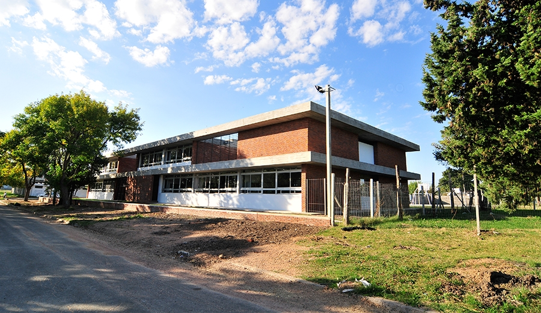

Nombre completo: Lucas Scarone
Grupo: 9°5
Cédula: 59079476
El Liceo N°2 de Canelones es una institución pública de educación media ubicada en la ciudad de Canelones, Uruguay. Brinda formación en Ciclo Básico y cuenta con turnos matutino, vespertino y nocturno. Cada año asisten cientos de estudiantes que participan en proyectos artísticos, científicos y sociales. El liceo promueve la educación integral, fomentando la creatividad y el trabajo en equipo en todas las áreas.
Taller es un espacio interdisciplinario donde los estudiantes combinan el conocimiento teórico con la práctica. Su objetivo es integrar áreas como arte, ciencia, música y tecnología, desarrollando la creatividad, la reflexión y el trabajo colaborativo. Se realizan proyectos anuales que permiten experimentar y aprender de forma participativa.
| Año | Horas |
|---|---|
| 1º | 2 |
| 2º | 2 |
| 3º | 2 |